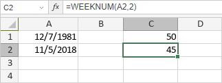

WEEKNUM funkcija
Funkcija WEEKNUM je jedna od funkcija za datum i vreme. Koristi se da vrati broj nedelje u kojoj se određeni datum nalazi tokom godine.
Sintaksa
WEEKNUM(serial_number, [return_type])
Funkcija WEEKNUM ima sledeće argumente:
| Argument | Opis |
|---|---|
| serial_number | Broj koji predstavlja datum, unet pomoću DATE funkcije ili druge funkcije za datum i vreme. |
| return_type | Numerička vrednost koja određuje koji dan počinje nedelju. Moguće vrednosti su navedene u tabeli ispod. |
Argument return_type može biti jedna od sledećih vrednosti:
| Numerička vrednost | Nedelja počinje | Sistem |
|---|---|---|
| 1 ili izostavljeno | Nedelja | 1 |
| 2 | Ponedeljak | 1 |
| 11 | Ponedeljak | 1 |
| 12 | Utorak | 1 |
| 13 | Sreda | 1 |
| 14 | Četvrtak | 1 |
| 15 | Petak | 1 |
| 16 | Subota | 1 |
| 17 | Nedelja | 1 |
| 21 | Ponedeljak | 2 |
Napomene
Kada je return_type postavljen na 1-17, koristi se Sistem 1. To znači da je prva nedelja u godini ona koja sadrži 1. januar.
Kada je return_type postavljen na 21, koristi se Sistem 2. To znači da je prva nedelja u godini ona koja sadrži prvi četvrtak u godini. Sistem 2 se obično koristi u Evropi prema ISO 8601 standardu.
Kako primeniti funkciju WEEKNUM.
Primeri
Slika ispod prikazuje rezultat koji vraća funkcija WEEKNUM.
